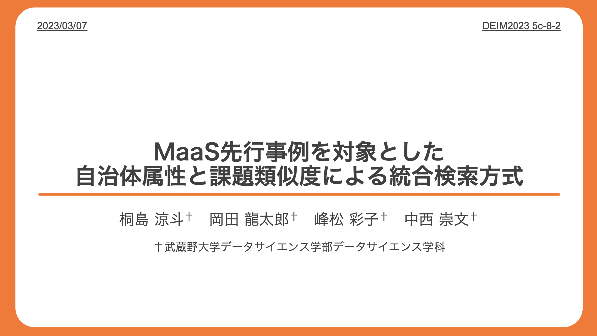
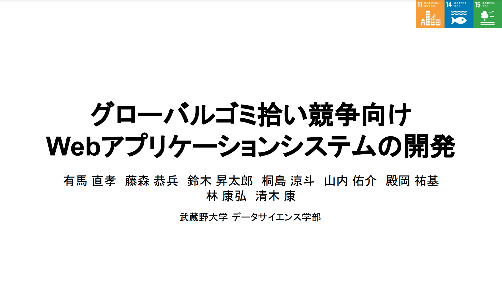
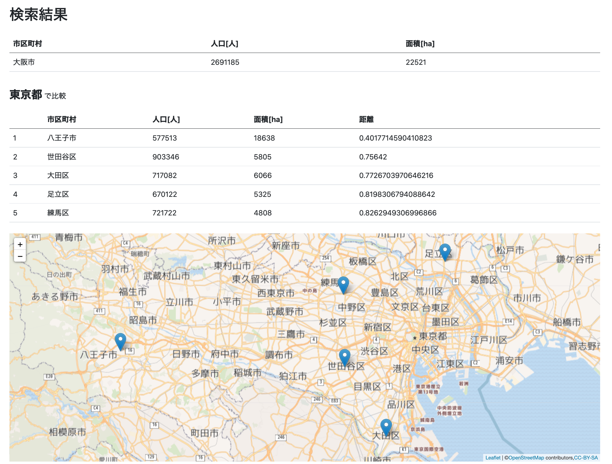
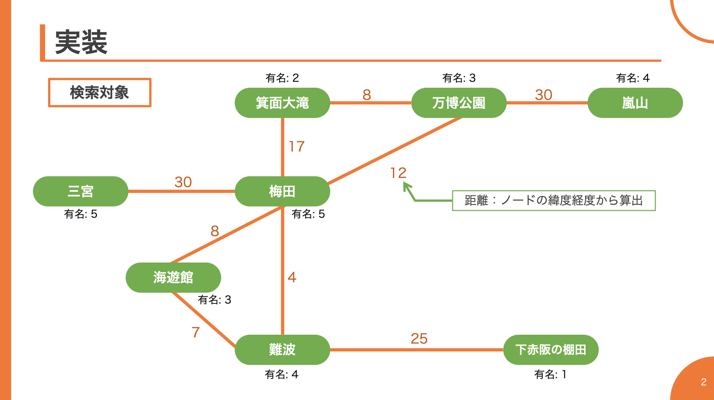
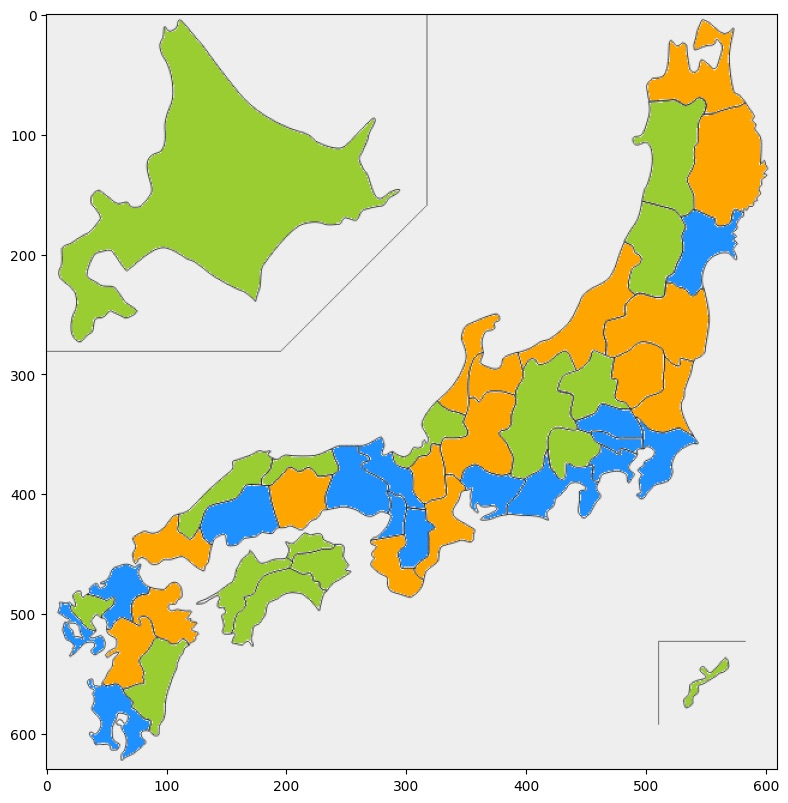

Outputs
MaaS先行事例を対象とした 自治体属性と課題類似度による統合検索方式
DEIM2023 第15回データ工学と情報マネジメントに関するフォーラム
桐島涼斗 / 岡田龍太郎 / 峰松彩子 / 中西崇文
Python
|  |
(画像をクリックするとPDFファイルが開きます) (論文の本文はこちら) 近年、利用者の減少や運転手の高齢化などにより、公共交通の減便や廃止が多くなっています。またその解決手段として、様々な自治体がMaaS導入に向けての実証実験を行なっています。 本方式は、新たにMaaSの導入を検討している自治体が、人口や面積などの属性とMaaSの導入を通じて解決したい課題を入力することで、入力した属性データを用いた自治体のクラスタリング結果と、 課題の類似度を組み合わせることにより、今までの実証実験事例から入力された情報に類似する事例の検索を可能とします。 |
グローバルゴミ拾い競争向け Webアプリケーションシステムの開発
Python
HTML/CSS
Flask
Bootstrap
PostgreSQL
|  |
(タイトルをクリックするとPDFファイルが開きます) 近年、海洋ゴミによる水質汚染が東南アジアを中心に世界中で問題となっていて、そのゴミの大半は陸から発生していると言われています。 そこで私たちは海上ゴミを減らすために、まず陸のゴミを減らすことに着目しました。ゴミを減らすためには多くの人がゴミ拾い活動に参加することが必須となってきます。 そのゴミ拾い活動をより簡単に、楽しく、積極的に行えるようにサポートするWebアプリケーションを、主にPythonを用いて開発しています。 |
Daily Life is a Game
桐島涼斗 / 池上藍羽 / 石井雄大 / 大西力登
Python
HTML/CSS
JavaScript
Flask
SQLite
|
(タイトルまたは画像をクリックするとPDFファイルが開きます) サポーターズ主催「オンライン開発合宿vol.6」において4人で作成したものです。 「日常生活にちょっと面白さを加えるアプリケーション」というテーマのもと、タスク管理アプリの開発を行いました。自分はログイン関係やユーザの管理を中心に携わっています。 |
大阪府の市町村別コロナ感染者及び感染者率の推移の可視化
Python
Processing
|
大阪府における市町村別のコロナ感染者数、及び10万人あたりの感染者数(人口に対する感染者率)の推移(2020/4/7~2020/9/20)をProcessingを用いて可視化しました。 ベースはPythonで、データはCSVから取ってきています。 |
まちくらべ
PHP
Bootstrap
PostgreSQL
|  |
(タイトルをクリックするとサイトに移動します) ある市区町村が仮に別の都道府県にあったら、その都道府県内のどの市区町村に近いのかを計算・表示するサイトです。 人口と面積の値から類似度を計算し、その結果をテーブル形式と地図(オープンストリートマップ)に表示しています。 フロントエンド、バックエンドの両方にPHPを使用しています。 |
旅行全体のポイント化
Python
HTML/CSS
Flask
Bootstrap
PostgreSQL
|  |
(タイトルまたは画像をクリックするとPDFファイルが開きます) 授業内課題で作成した、移動をテーマにした作品です。 旅行と言えば観光地での行動がメインと考える人が多いですが、そこまでの移動や目的地に少しゲーム性を持たせようと考えたアプリです。 このアプリを使用すると移動するだけでポイントが獲得出来ますが、多くの人が利用しないような交通手段を使ったり観光地に行くほど、貰えるポイントが増える仕組みになっています。 ルートの検索にダイクストラ法を使用し、最短経路を計算しています。 |
都道府県別 交通機関の使用状況調査とクラスタリング
Python
Pandas
Matplotlib
scikit-learn
|  |
各都道府県の人口をもとに「鉄道」「自動車」「バス」「タクシー」の利用割合を求め、k-means法にて傾向が似ている3つに分類しました。
写真はその結果で、都市圏[青]・地方(都市近郊[橙]・それ以外[黄緑])と私たちの直感に近い結果が得られました。 Pythonを用いており、データクレンジングにPandas、描画にMatplotlib、クラスタリングにscikit-learnを使用しています。 |